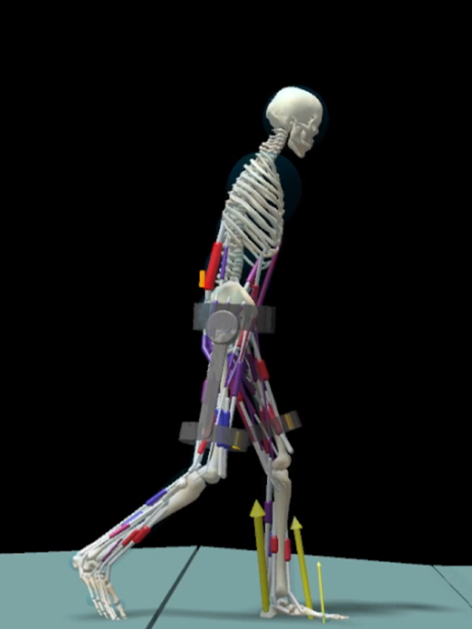

Problem:
Improve assistive device effectiveness without increasing user fatigue or reducing long-term wearability.
Method:
Redesigned mechanical interfaces to prioritize anatomical alignment and load path efficiency before actuator selection. Iterated hardware with fast prototyping to validate human-in-the-loop constraints that are not captured in simulation alone.
Result:
Hardware revisions improved comfort and motion naturalness in addition to reducing mass. The platform became better suited for extended user trials and data-driven assistance development.
Skills used: SolidWorks, Git, Python, Microcontrollers, 3D Printing